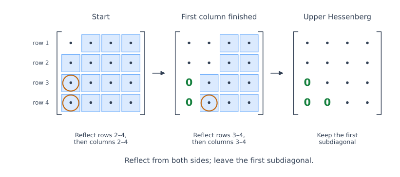

Hessenberg Reduction and QR Iteration#
The QR iteration replaces a matrix by a unitarily similar one whose entries below the diagonal approach zero under suitable convergence assumptions. For a dense \(n\times n\) matrix, each QR factorization and reverse multiplication costs \(O(n^3)\) operations. Repeating these dense operations is expensive.
A one-time reduction to upper Hessenberg form makes each subsequent QR step cost only \(O(n^2)\).
The preceding analysis allowed complex matrices. Here we describe the reduction for a real matrix \(A\), so the transformations are orthogonal and \(^{H}\) becomes the ordinary transpose \(^{T}\). Write the reduction as
Here \(Q_{\mathrm{red}}\) is the orthogonal reduction factor and \(H\) is upper Hessenberg. Thus \(H\) has the same eigenvalues as \(A\), and we can start QR iteration from \(T_0=H\).
We describe the reduction using real symmetric reflections. For a complex matrix, the corresponding factorization is \(H=Q_{\mathrm{red}}^HAQ_{\mathrm{red}}\) with \(Q_{\mathrm{red}}\) unitary.
Why Leave One Subdiagonal?#
An \(n\times n\) matrix \(H\) is upper Hessenberg if
Only the first subdiagonal may be nonzero below the diagonal:
In QR factorization, a Householder reflection acts from the left to eliminate entries in a column. For eigenvalue computation, we must also apply its transpose from the right to preserve similarity. If the first reflection mixes all coordinates to eliminate every entry below \(a_{11}\), the right update generally mixes other columns into column 1 and destroys those zeros.
Instead, leave the entry in position \((2,1)\) and use a reflection that fixes the first coordinate. It can eliminate entries \((3,1),\ldots,(n,1)\) while the right update leaves column 1 unchanged. Repeating this idea gives Hessenberg form in a fixed number of steps. The remaining subdiagonal is then handled by QR iteration.
Householder Reduction Column by Column#


Fig. 18 Householder Hessenberg reduction. Each step reflects from the left to clear the circled entries, then from the right to preserve similarity. Blue cells show the combined update regions: the right reflection also changes entries above the active rows, but only in later columns. The green zeros remain unchanged. Unlike Householder QR, the first subdiagonal is retained. Dots denote entries that may be nonzero.#
Set \(A^{(0)}=A\). At step \(j=1,\ldots,n-2\), extract the part of column \(j\) below the diagonal:
As in Householder QR, choose a reflection \(\widehat P_j\) such that \(\widehat P_jx=\sigma e_1\), where \(|\sigma|=\|x\|_2\). Embed it in the full matrix:
The transformation acts only on coordinates \(j+1,\ldots,n\). Apply it from both sides:
The left update creates zeros below position \((j+1,j)\) in column \(j\). The right update preserves them because it mixes only columns \(j+1,\ldots,n\).
The earlier columns also retain their zeros. For each column \(\ell<j\), all entries in rows \(j+1,\ldots,n\) are already zero, so the left reflection acts on a zero vector there. The right update leaves columns \(1,\ldots,j\) unchanged. Thus each step completes one more column without undoing previous eliminations.
If the entries to eliminate are already zero, use the identity transformation. No division by a zero vector is needed. After \(n-2\) steps, the result is upper Hessenberg; matrices of size \(n\le2\) already have this form.
The Accumulated Transformation#
Expanding the successive updates gives
Since each reflection is symmetric, the product on the left is \(Q_{\mathrm{red}}^T\), giving the convention \(H=Q_{\mathrm{red}}^TAQ_{\mathrm{red}}\) used throughout this page.
The reflections are applied using their vectors and rank-one updates, rather than by forming dense matrices \(P_j\). The vectors can be stored in the eliminated part of \(A\); \(Q_{\mathrm{red}}\) need not be formed when only eigenvalues are wanted. This is the representation used by LAPACK’s Hessenberg reduction. If \(Hv=\lambda v\), then \(Q_{\mathrm{red}}v\) is an eigenvector of \(A\), so the stored transformations also let us recover eigenvectors later.
QR Iteration on the Hessenberg Matrix#
For an upper Hessenberg iterate \(T_k\), the Givens construction needs at most \(n-1\) rotations. Rotation \(G_j\) mixes rows \(j,j+1\) to eliminate entry \((j+1,j)\), proceeding from top to bottom:
Each rotation updates only two rows, so forming \(R_{k+1}\) and storing the rotations costs \(O(n^2)\).
The reverse product is computed by applying those rotations from the right:
The similarity relation preserves the eigenvalues; the product of saved rotations makes the update inexpensive.
Start with the upper triangular matrix \(R_{k+1}\). The first right rotation mixes columns 1 and 2, possibly creating entry \((2,1)\). The second mixes columns 2 and 3, possibly creating entry \((3,2)\), while leaving column 1 unchanged. In general, when columns \(j,j+1\) are mixed, both are zero below row \(j+1\). Only a first-subdiagonal entry can be introduced into column \(j\), and that column is not changed again. Hence \(T_{k+1}\) is upper Hessenberg.
Applying the rotations from the right also costs \(O(n^2)\). Both parts of the QR step must exploit the rotations. Forming a dense \(U_{k+1}\) and using a general dense multiplication for \(R_{k+1}U_{k+1}\) would lose this saving.
This argument uses the adjacent-row QR construction, so it remains valid when a subdiagonal entry is already zero or \(T_k\) is singular: unnecessary rotations can be taken as the identity. It does not rely on a unique QR factorization.
Computational Cost#
For real arithmetic, write \(q=n-j\) at reduction step \(j\). Applying the left reflection to the trailing \(q\times q\) block costs about \(4q^2\) flops. Applying the right reflection to its \(n\times q\) active block costs about \(4nq\) flops. Constructing the reflection and setting the eliminated column contribute lower-order work. Summing gives
This cost produces \(H\) and an implicit representation of \(Q_{\mathrm{red}}\). Forming \(Q_{\mathrm{red}}\) explicitly by backward accumulation of the stored reflections adds approximately \(\frac43n^3\) flops, giving a total of \(\frac{14}{3}n^3\) to obtain both matrices.
If \(k\) structured QR steps are performed after reduction, the total cost is
compared with \(O(kn^3)\) for dense QR iteration without reduction. If \(k=O(n)\), these estimates become \(O(n^3)\) and \(O(n^4)\), respectively. This is a cost comparison, not a convergence guarantee: basic QR iteration need not finish in \(O(n)\) steps. Hessenberg reduction lowers the cost of each step without changing the eigenvalue ratios that control convergence.
The Symmetric Case: Tridiagonal Form#
If \(A=A^T\), orthogonal similarity preserves symmetry:
A symmetric upper Hessenberg matrix is tridiagonal: every zero below the first subdiagonal has a matching zero above the first superdiagonal. Exploiting symmetry in the reduction lowers its leading cost to \(\frac43n^3\) flops for the tridiagonal matrix and stored reflections.
A QR step then preserves both symmetry and Hessenberg form, so the iterates remain tridiagonal. Exploiting this narrow band structure and storing the rotations implicitly makes each step cost \(O(n)\) when only eigenvalues are wanted. Accumulating these rotations into a full eigenvector matrix instead costs \(O(n^2)\) per step. The comparison of symmetric and nonsymmetric QR iteration develops these cases further.
The next section develops a modification of QR iteration that can reduce the number of steps needed for convergence.